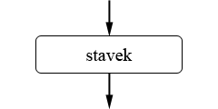
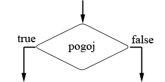
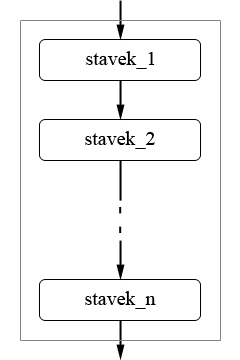
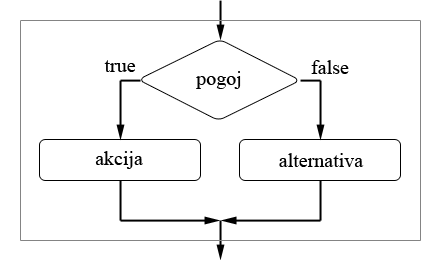
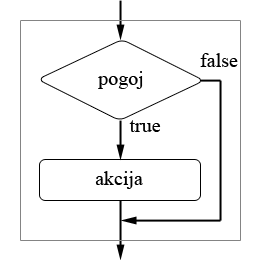
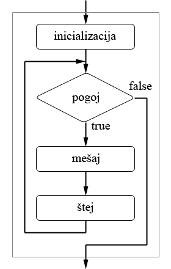
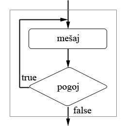
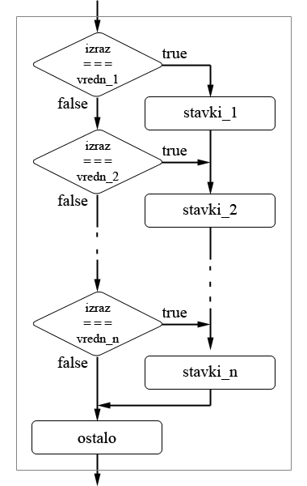

Osnovni gradniki vsakega programskega jezika so stavki (angl. statement), ki predstavljajo ukaze, ki jih mora računalnik izvrševati. Izrazi, ki smo jih spoznali v prejšnjem poglavju, so velikokrat že sami po sebi stavki, čeprav to ni nujno. Če na primer nek izraz vstavimo v nek drug izraz, potem prvi izraz ni stavek, drugi pa lahko je, če stoji v svoji lastni vrstici, ali če ima na koncu podpičje. Podpičja na koncu stavkov v jeziku JavaScript so obvezna le, če imamo več stavkov v eni vrstici. S podpičji na ta način stavke ločimo. Zaradi podobnosti z jezikom C priporočam, da podičja vseeno pišete na koncu vsakega stavka, ker bo tako prehod na jezik C precej lažji. Podpičja ne bomo pisali edino, kadar se bo stavek zaključil z zavitim zaklepajem (}).
JavaScript pozna celo paleto osnovnih programskih stavkov, ki jih bomo večino spoznali v tem učbeniku. Čeprav JavaScript ni objektno usmerjen programski jezik, pa je objektno zasnovan, kar pomeni, da podpira objekte. Nekaj malega o objektih v jeziku JavaScript bomo povedali v poglavju Uporaba objektov.
Preden se lotimo stavkov, si poglejmo še način grafične predstavitve delovanja programov, ki mu pravimo diagram poteka (angl. flowchart).
Stavki, iz katerih je zgrajen program, se izvajajo v določenem zaporedju. To zaporedje lahko prikažemo grafično z uporabo pravokotnikov, rombov in puščic. Pravokotnik predstavlja stavek ali skupino stavkov, ki se morajo izvršiti. V vsak pravokotnik vstopa ena pušcica, druga puščica pa iz njega izstopa:
Puščici predstavljata smer, v kateri potujemo po diagramu poteka, ko ga beremo. Drug element, romb, predstavlja odločitev. Vanj pridemo po eni poti, izstopimo pa lahko po eni od dveh možnih poti. Če ima izraz, ki je v rombu (pogoj), vrednost true oziroma različno od nič, potem izstopimo v smeri puščice, ob kateri je zapisano "true". Če pa ima izraz vrednost false oziroma nič, potem izstopimo v smeri puščice, ob kateri piše "false":
Oba elementa lahko prek puščic povezujemo na poljubne načine, čeprav bomo videli, da v jezikih, kakršen je JavaScript, veljajo določena strukturna pravila, zato takim jezikom pravimo tudi strukturirani jeziki (angl. structured language). Ta pravila nas omejujejo skoraj izključno na uporabo stavkov, ki imajo le en vhod in izhod. Odločitve obstajajo le kot gradnik vnaprej določenih stavčnih elementov, ki jih bomo spoznali v tem poglavju.
Zdaj pa na delo. Do konca poglavja bomo spoznali večino stavkov, ki so navedeni v naslednji tabeli. Zadnja dva stavka, klic funkcije in stavek return, bomo obravnavali v naslednjem poglavju, ko bomo podrobneje govorili o funkcijah.
| stavek | namen |
|---|---|
| priredilni | spremenljivki priredi vrednost izraza |
| prazen | ne naredi ničesar |
| deklaracija spremenljivke | najavi spremenljivko (in ji po potrebi priredi začetno vrednost) |
| sestavljen | združi več stavkov v enega |
| if..else | izvede enega od dveh ponujenih stavkov |
| while | ponavlja izvajanje stavka |
| for | ponavlja izvajanje stavka |
| do..while | ponavlja izvajanje stavka |
| break | takoj izstopi iz ponavljalnega stavka ali stavka switch |
| continue | prekine trenutno iteracijo ponavljalnega stavka |
| switch | izbira med vrsto alternativami |
| oznaka | stavku priredi oznako |
| klic funkcije | izvede funkcijo |
| return | prekine izvajanje funkcije in po potrebi vrne vrednost |
Najosnovnejši stavek vsakega programskega jezika je priredilni stavek, ki v spremenljivko zapiše vrednost na desni strani priredilnega operatorja. Precej priredilnih stavkov smo srečali že v prejšnjem poglavju, tule je še en primer:
x_na_kvadrat = x * x;
Kot smo že uvodoma povedali, bomo na koncu stavka pisali podpičje, čeprav je to obvezno le v primeru, kadar nastopi več stavkov v eni vrstici.
Samo podpičje predstavlja prazen stavek, ki ne naredi ničesar. Čeprav se zdi, da takšen stavek ne služi ničemur, bomo videli, da ima lahko prazen stavek določen pomen, kadar nastopa kot del kakšnega drugega stavka.
Spremenljivko deklariramo (napovemo) tako, da pred njeno ime postavimo rezervirano besedo var, kar je kratica angleške besede variable, ki pomeni spremenljivko:
var krNeki;
V enem stavku lahko deklariramo tudi več spremenljivk:
var krNeki, seNeki;
Spremenljivki lahko ob deklaraciji priredimo začetno vrednost:
var krNeki = 42;
Na ta način postane spremenljivka krNeki enaka 42 in njen tip postane številski, enako, kot če bi ji vrednost priredili v posebnem priredilnem stavku.
Ob deklaraciji lahko ustvarimo tudi objekt, o čemer bomo podrobneje govorili v poglavju Uporaba objektov:
var temperatura = new Array();
Sestavljen stavek ni nič drugega kot več stavkov, nanizanih drug za drugim. Sestavljen stavek naredimo tako, da stavke obdamo s parom zavitih oklepajev:
{
stavek_1;
stavek_2;
...
stavek_n;
}
|
Stavki se seveda izvajajo v istem vrstnem redu, kakor so navedeni. Diagram poteka sestavljenega stavka je videti takole:
Zelo pomembno je, da si zapomnimo, da sestavljen stavek navzven deluje kot en sam stavek z enim vhodom in enim izhodom, kar je na gornjem diagramu prikazano s tankim pravokotnikom, ki obdaja vseh n stavkov. Takšen stavek bomo lahko kasneje vstavili v kak drug diagram poteka.
Stavek if..else je pogojni stavek, ki deluje zelo podobno kot ternarni pogojni operator, ki smo ga srečali v prejšnjem poglavju. Sintaktični zapis stavka izgleda takole:
if (pogoj) akcija; else alternativa; |
Če je pogoj enak true, potem se izvrši stavek akcija, sicer se izvrši stavek alternativa. Stavek deluje v resnici kot nekakšna kretnica. Takšen je diagram poteka stavka if..else:
Na mesto stavkov akcija in alternativa lahko vstavimo poljuben stavek, na primer sestavljen stavek, ali celo še en stavek if..else.
Čas bo že, da si ogledamo kak primer.
Včasih si v primeru, ko pogoj ni izpolnjen, ne želimo ničesar posebnega. V takem primeru enostavno izpistimo del else:
if (pogoj) akcija; |
Dobimo takšen diagram poteka:
Vzemimo za primer, da imamo v nekem programu spremenljivko sekunde, ki šteje število pretečenih sekund, in spremenljivko minute, ki šteje število pretečenih minut. Vsakokrat, ko sekunde dosežejo vrednost 60, želimo, da se postavijo na 0, minute pa se povečajo za ena. V nasprotnem primeru naj se ne zgodi nič. Problem lahko rešimo takole:
//...
sekunde++;
if (sekunde == 60)
{
sekunde = 0;
minute++;
}
document.write("Preteklo je " + minute + " minut in " + sekunde + " sekund.");
//...
S pogojnim stavkom if..else smo v naše programe že uvedli možnost odločanja. Program se bo izvedel na en ali drug način, odvisno od trenutnega stanja. Vendar nam ta stavek še vedno ne omogoča, da bi računalniku prepustili, da za nas opravlja ponavljajoča se in duhamorna opravila. Uporabiti moramo katerega od treh ponavljalnih stavkov oziroma programskih zank (angl. loop). Prvi tak ponavljalni stavek je stavek while. Takšen je njegov sintaktični zapis:
while (pogoj) mešaj; |
While po angleško pomeni dokler. V resnici lahko ta stavek razumemo kot: Dokler je pogoj enak true, izvajaj stavek mešaj. Če smo še bolj natančni, se stavek izvaja tako, da se najprej izračuna vrednost izraza pogoj in če je ta enaka true, se izvrši stavek mešaj. Takoj za tem se spet izračuna vrednost izraza pogoj, in tako dalje. Takole izgleda diagram poteka stavka while:

Za primer vzemimo vrsto, ki v vsoti konvergira proti številu Π:
Π = 4 - 4/3 + 4/5 - 4/7 + 4/9 - ...
Z uporabo stavka while bomo izračunali vsoto te vrste. Da izračun ne bo trajal neskončno dolgo, bomo v vsoti upoštevali le člene, ki so po absolutni vrednosti še večji od 0.00001. Poglejmo si izgotovljen program.
Naslednji ponavljalni stavek je stavek for, katerega sintaktični zapis je tak:
for (inicializacija; pogoj; štej) mešaj; |
Čeprav na prvi pogled tega ni videti, se stavek v resnici ne razlikuje dosti od stavka while. V stavku for se najprej izvede stavek inicializacija, potem se izračuna pogoj, in če je slednji enak true, se eden za drugim izvedeta še stavka mešaj in štej. Takoj zatem se ponovno izračuna pogoj, in če je njegova vrednost še zmeraj true, se spet izvršita stavka mešaj in štej. Vsa zgodba se ponavlja, dokler je pogoj enak true. Takšen je diagram poteka:
Stavek for najpogosteje uporabimo v primerih, ko je število ponavljanj že vnaprej znano. V tem primeru si navadno izberemo kak števec, ki ga v stavku inicializacija nastavimo na začetno vrednost, v stavku štej spreminjamo njegovo vrednost, navadno za ena, v stavku pogoj pa nastavimo končno vrednost števca. Če na primer želimo, da se nam v oknu brskalnika izpišejo vrednosti med 0 in 9, lahko to dosežemo takole:
for (i = 0; i < 10; i++)
document.write(i + " ");
Poglejmo si še za odtenek bolj uporaben primer.
Malo prej sem omenil, da je stavek for zelo podoben stavku while. Če v stavku for izpustimo stavka inicializacija in štej, dobimo stavek, ki je po delovanju popolnoma ekvivalenten stavku while:
for (; pogoj;) mešaj;
Obe podpičji znotraj oklepajev sta obvezni in ju moramo vedno pisati, tudi če katerega od stavkov opustimo.
V razmislek še tole. Kaj se izpiše v brskalniku, če v delu programa za izpis števil med 0 in 9, ki smo ga srečali malo prej, na koncu prve vrstice dodamo podpičje? Spomnimo se, da samo podpičje predstavlja prazen stavek. Stavek, ki ničesar ne naredi, vendar se še vedno obravnava kot stavek:
for (i = 0; i < 10; i++);
document.write(i + " ");
Zadnji od treh ponavljalnih stavkov je stavek do..while. Stavek se nekoliko razlikuje od prejšnjih dveh in sicer v tem, da se pogoj preverja na koncu zanke. Posledica tega je, da se stavek mešaj v vsakem primeru izvrši vsaj enkrat. Sintaktični zapis stavka do..while je takšen:
do mešaj; while (pogoj); |
In takole je videti diagram poteka:
Če želimo, da se nam v oknu brskalnika ena nad drugo izpišejo vrednosti med 1 in 9, lahko uporabimo stavek do..while na tak način:
var i = 0;
do
document.write(++i + "<br />");
while (i < 9);
Stavek break (angl. prekini) uporabimo znotraj ponavljalnega stavka, in z njim predčasno ustavimo izvajanje zanke. Izvajanje programa se nadaljuje s stavkom, ki sledi stavku, iz katerega smo izstopili. Poglejmo si kar primer.
Tudi ta stavek uporabimo znotraj ponavljalnega stavka. Za razliko od stavka break ta stavek ne prekine popolnoma izvajanja zanke, temveč prekine le trenutno iteracijo. Z drugimi besedami, preskočijo se vsi stavki, ki sledijo stavku continue (angl. nadaljuj). Izvajanje zanke se nadaljuje s preverjanjem pogoja. Tukaj je nek brezzvezen a ilustrativen primer s številkami.
Izbirni stavek oziroma stavek switch (slov. kretnica) povzroči, da se izvede ena od večih ponujenih alternativ. Takšen je njegov sintaktični zapis:
switch (izraz)
{
case vredn_1: stavki_1;
case vredn_2: stavki_2;
//...
case vredn_n: stavki_n;
default: ostalo;
}
|
Najprej se določi vrednost izraza, zapisanega v oklepajih, potem pa se ta vrednost po vrsti primerja z vsemi vrednostmi, ki sledijo rezerviranim besedam case (slov. primer). Čim prva primerjava vrne vrednost true, se od tistega mesta naprej izvedejo po vrsti vsi stavki, ki so še ostali do konca stavka switch, vključno s skupino stavkov ostalo. Če nobena primerjava ne vrne vrednosti true, potem se izvedejo le stavki, ki sledijo rezervirani besedi default (slov. privzeto). Beseda default s skupino stavkov ostalo ni nujno potrebna in jo lahko tudi izpustimo. Ilustrirajmo si izbirni stavek še z diagramom poteka:
Če kdo v tem hipu protestira, ali morda celo tolče po računalniku, ga skoraj težko obsojamo. Izbirni stavek v obliki, kakršnega smo predstavili, dejansko ne omogoča izbire med večimi alternativami, ampak zgolj ponuja več vstopnih točk v zaporedje stavkov. S skromno pomočjo stavka break bo izbirni stavek res postal izbirni stavek. Poglejmo si to na primeru.
Oznako (angl. label) postavimo pred ponavljalni stavek, s čimer ga označimo:
MojaOznaka :
ponavljalni_stavek;
Zdaj lahko kjerkoli v označenem ponavljalnem stavku uporabimo stavek break z isto oznako:
break MojaOznaka;
S takšnim stavkom break izstopimo iz tega ponavljalnega stavka, tudi če se nahajamo v drugem ponavljalnem stavku, ki je gnezden v označenem stavku. Nivo gnezdenja pri tem ni pomemben. Z oznako je na podoben način mogoče spremeniti delovanje stavka continue.
Osvetlimo zadevo še z enostavnim primerom.
V tem poglavju smo spoznali, da spada JavaScript med tako imenovane strukturirane programske jezike. Značilno za te jezike je, da je programe možno graditi le iz stavkov, ki imajo en sam vhod in izhod. Te stavke lahko sestavljamo bodisi tako, da jih nizamo enega za drugim, bodisi jih vstavljamo na vnaprej predvidena mesta v pogojne, ponavljalne ali kakšne druge stavke, ki imajo sami spet le en vhod in izhod.
Stavke, ki smo jih spoznali, lahko v grobem razdelimo v štiri skupine. Prvi so enostavni stavki, kakršna sta na primer priredilni stavek ali deklaracija spremenljivke. V drugo skupino spadata pogojni stavek if..else in izbirni stavek switch, ki povzročita, da se glede na določen pogoj izvede ali ne izvede ena od možnih alternativ. Tretja skupina so trije ponavljalni stavki while, for in do..while, ki povzročijo, da se en in isti del programske kode izvrši večkrat. V zadnjo skupino uvrstimo stavka break in continue, ki na nek način podirata strukturiranost jezika, saj takorekoč ustvarjata neke dodatne poti in izhode iz sicer strukturiranih stavkov.
Zelo pomembno vlogo igrajo sestavljeni stavki, ki jih ustvarimo tako, da več stavkov enega za drugim nanizamo v par zavitih oklepajev. Na ta način lahko vstavimo več zaporednih stavkov na mesta, ki so sicer predvidena za en sam stavek.